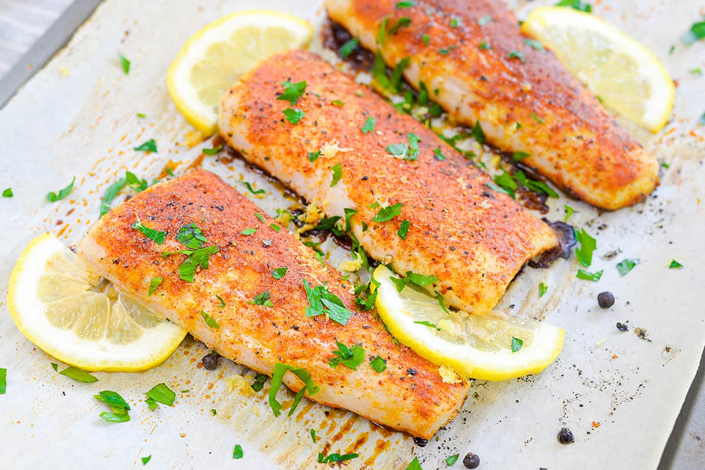

Return home by clicking here
A Recipe for Lemon Pepper Fish

Ingredients
- 4 pieces white fish
- 1 tablespoon lemon pepper
- 1 teaspoon garlic powder
- 1 teaspoon Italian seasoning
- 1 teaspoon sweet paprika
- 2 tablespoons of olive oil
- 1 lemon (sliced)
- Minced parsley (to serve)
Steps
- Preheat the oven to 425 degrees Fahrenheit. Dry the fish well with paper towels then sprinkle the lemon pepper,
garlic powder, Italian seasoning, and paprika evenly over both sides of the fish.
- Drizzle half of the olive oil over one side of the fish pieces then pat the spices onto the fish so that they
really stick to the fish. Transfer the fish to a baking sheet, oiled side down. Drizzle the remaining olive
oil over the fish and once more pat the spices onto the fish. Arrange a few lemon slices around the fish.
- Bake the lemon pepper fish for 12-15 minutes, or until it turns white and flakes easily. Serve the fish
with the lemon slices on the side and a little parsley sprinkled over the top.